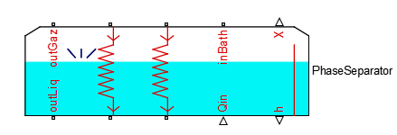

1.8 Phase separator 

a. Description
This component is a phase separator including two
heat exchangers.
Several gas/liquid inlet/outlet ports are available.
The mixture inside of the bath is considered in
thermodynamic equilibrium.Using the gravity,
the liquid will go down whereas the gas will rise.
The heat exchanger on the left is the exchanger 1, and the one
one the right is the exchanger 2.
- The phase separator imposes pressure on it inlet
(inBath)
- The phase separator imposes both temperature and
pressure on its outlets (outLiq and outGaz)
- The phase separator imposes mass flow rate
on its exchanger inlets
- The phase separator imposes both pressure and
temperature on its exchanger outlets
- The heigh of liquid in the bass is reachable on
port h
- The quality of the mixture in the bass is reachable
on port X
b. Instructions
To ensure compilation, you must respect the following points :
- The inlet phase separator must be connected to a
component that impose both flow rate and temperature
- The outlets phase separator must be connected to a
component that impose the flow rate
- The inlets heat exchanger must be connected to a
component that impose both temperature and pressure
- The outlets heat exchanger must be connected to a
component that impose the mass flow
- The Qin port must be connected to a component that
impose the power
- All parameters must be positive.
Note : the P initial condition should be equal to
the actual value on the scheme (especially for phase separator
connected to sources).
If you don't want to use an exchanger, connect to the input of
this exchanger a source of pressure and temperature, an to the
output of the exchanger a source of mass flow.
The mass flow source should be set to 0.
©2015 The PI-02